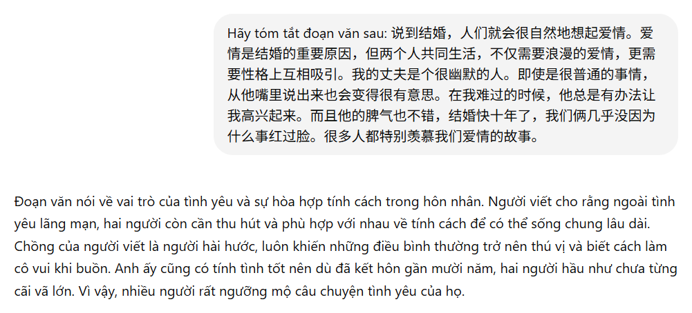
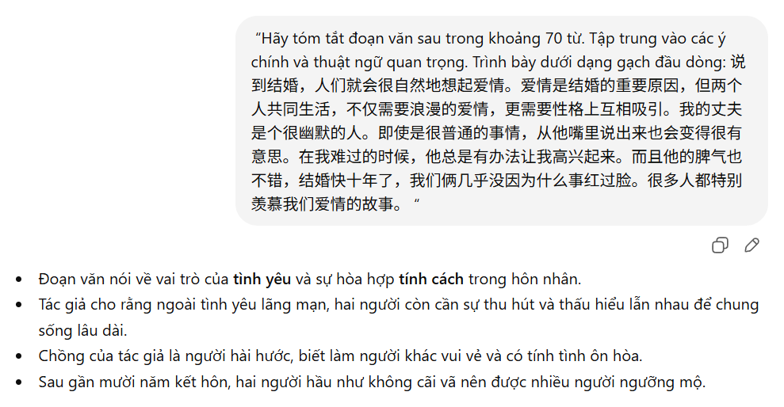
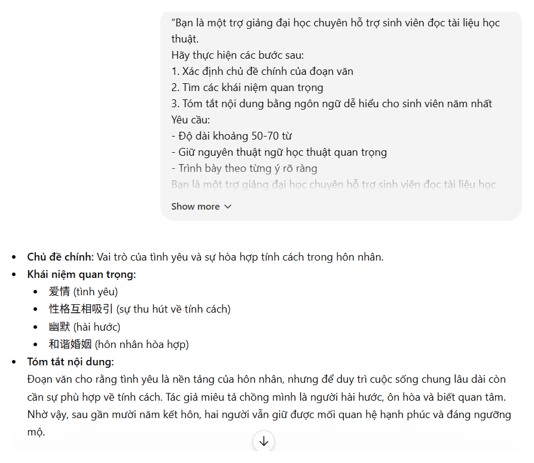
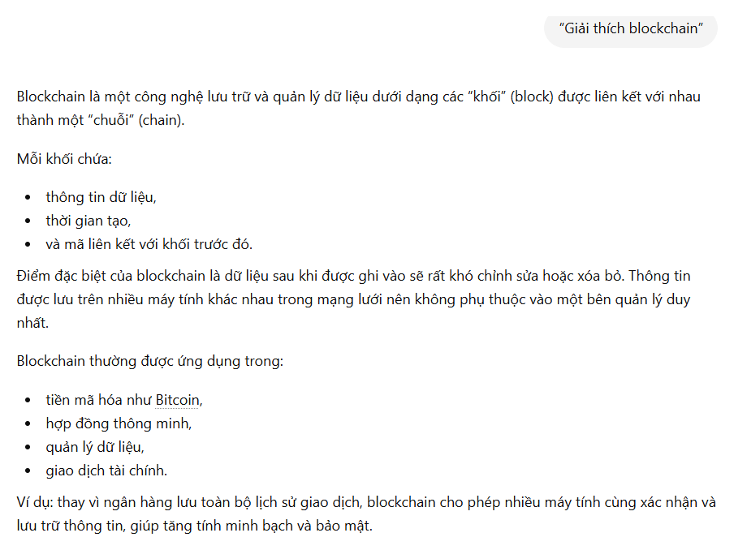
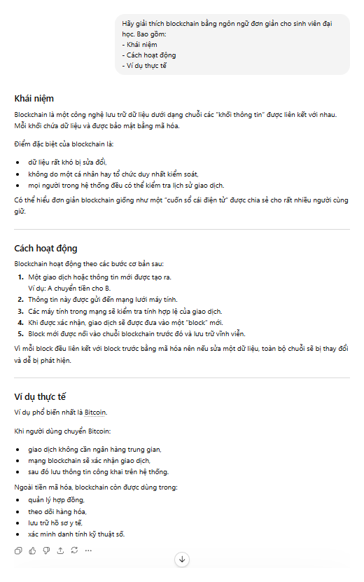
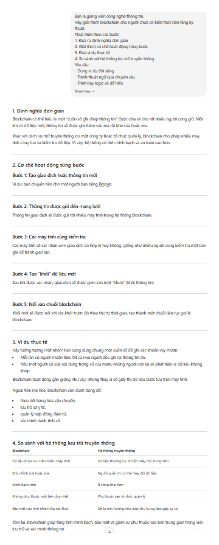
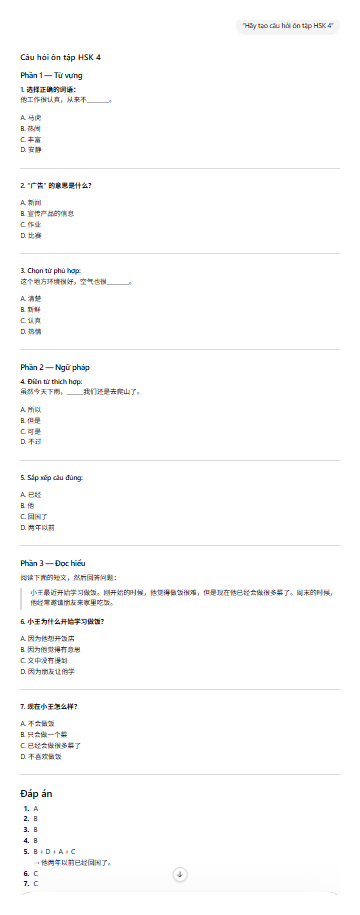
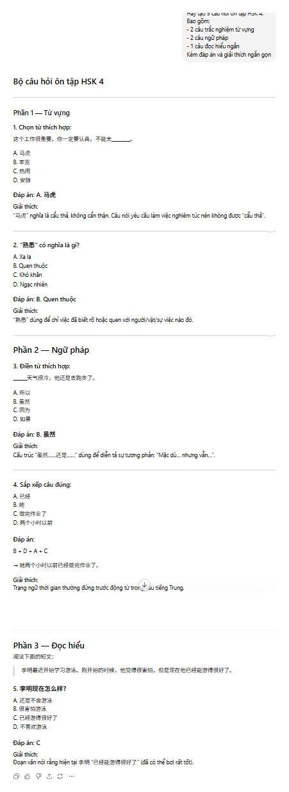
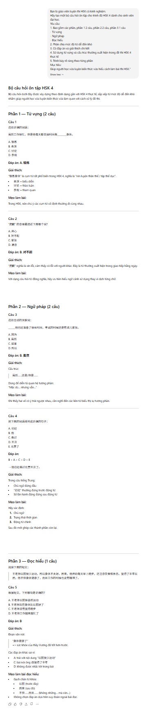

BÁO CÁO THỰC HÀNH PROMPT ENGINEERING TRONG HỌC TẬP
Họ và tên: Vũ Đan Ngọc Vân Khánh
MSSV: 25041670
Trường: Đại học Ngoại ngữ, ĐHQGHN
I. MỞ ĐẦU
1. Bối cảnh
Trong những năm gần đây, sự phát triển mạnh mẽ của trí tuệ nhân tạo (AI) đã tạo ra nhiều thay đổi trong lĩnh vực giáo dục. Các mô hình ngôn ngữ lớn (Large Language Models - LLMs) như ChatGPT có khả năng hỗ trợ người học trong nhiều hoạt động như tìm kiếm thông tin, tóm tắt tài liệu, giải thích kiến thức và tạo nội dung học tập. Tuy nhiên, chất lượng phản hồi của AI không chỉ phụ thuộc vào năng lực của mô hình mà còn phụ thuộc vào cách người dùng đặt câu hỏi hay xây dựng prompt.
Prompt Engineering là quá trình thiết kế và tối ưu hóa câu lệnh đầu vào nhằm giúp AI hiểu rõ yêu cầu và tạo ra kết quả phù hợp nhất. Vì vậy, việc tìm hiểu và thực hành Prompt Engineering có ý nghĩa quan trọng trong việc khai thác hiệu quả các công cụ AI phục vụ học tập.
2. Mục tiêu
- Tìm hiểu ảnh hưởng của prompt đến chất lượng phản hồi của AI.
- So sánh hiệu quả giữa các mức độ prompt khác nhau.
- Rút ra các nguyên tắc viết prompt hiệu quả trong học tập.
3. Công cụ sử dụng
- Công cụ AI: ChatGPT
- Mô hình thử nghiệm: GPT
- Phương pháp: Xây dựng nhiều phiên bản prompt cho cùng một tác vụ và so sánh kết quả.
II. QUY TRÌNH THỰC HIỆN
Bước 1: Lựa chọn tác vụ học tập
Ba tác vụ được lựa chọn gồm:
- Tóm tắt tài liệu học thuật.
- Giải thích một khái niệm phức tạp.
- Tạo bộ câu hỏi ôn tập.
Bước 2: Thiết kế prompt
Đối với mỗi tác vụ, xây dựng ba loại prompt:
- Prompt cơ bản
- Prompt cải tiến
- Prompt nâng cao
Bước 3: Thử nghiệm với ChatGPT
Nhập từng prompt vào ChatGPT và ghi nhận kết quả.
Bước 4: Chụp màn hình
Ghi lại quá trình nhập prompt và kết quả phản hồi của ChatGPT để so sánh trực quan giữa ba mức độ.
Minh chứng thử nghiệm
Hình 1. Prompt cơ bản và kết quả tác vụ 1

Hình 2. Prompt cải tiến và kết quả tác vụ 1

Hình 3. Prompt nâng cao và kết quả tác vụ 1

Hình 4. Prompt cơ bản và kết quả tác vụ 2

Hình 5. Prompt cải tiến và kết quả tác vụ 2

Hình 6. Prompt nâng cao và kết quả tác vụ 2

Hình 7. Prompt cơ bản và kết quả tác vụ 3

Hình 8. Prompt cải tiến và kết quả tác vụ 3

Hình 9. Prompt nâng cao và kết quả tác vụ 3

III. KẾT QUẢ THỬ NGHIỆM
1. Tác vụ 1: Tóm tắt tài liệu học thuật
Prompt cơ bản
“Hãy tóm tắt đoạn văn sau.”
Nhận xét: AI tạo được bản tóm tắt đúng nội dung nhưng còn mang tính khái quát, chưa xác định rõ trọng tâm và cách trình bày.
Prompt cải tiến
“Hãy tóm tắt đoạn văn sau trong khoảng 70 từ. Tập trung vào các ý chính và thuật ngữ quan trọng. Trình bày dưới dạng gạch đầu dòng.”
Nhận xét: Kết quả có cấu trúc rõ ràng hơn, các ý chính được thể hiện ngắn gọn và dễ theo dõi.
Prompt nâng cao
“Bạn là một trợ giảng đại học chuyên hỗ trợ sinh viên đọc tài liệu học thuật...”
Nhận xét: Kết quả có chất lượng cao nhất. AI xác định được chủ đề chính, khái niệm quan trọng và trình bày nội dung theo từng mục rõ ràng.
| Tiêu chí | Cơ bản | Cải tiến | Nâng cao |
|---|---|---|---|
| Độ rõ ràng | Trung bình | Tốt | Rất tốt |
| Cấu trúc | Thấp | Khá | Cao |
| Khả năng hỗ trợ học tập | Trung bình | Tốt | Rất tốt |
2. Tác vụ 2: Giải thích khái niệm Blockchain
Prompt cơ bản
“Giải thích blockchain.”
Nhận xét: AI giải thích đúng khái niệm nhưng còn khá ngắn gọn và thiên về định nghĩa.
Prompt cải tiến
“Hãy giải thích blockchain bằng ngôn ngữ đơn giản cho sinh viên đại học. Bao gồm khái niệm, cách hoạt động và ví dụ thực tế.”
Nhận xét: Câu trả lời đầy đủ hơn, có ví dụ thực tế giúp người học dễ hiểu.
Prompt nâng cao
“Bạn là giảng viên công nghệ thông tin...”
Nhận xét: Kết quả có tính sư phạm cao hơn, trình bày logic theo từng bước và có phần so sánh với hệ thống truyền thống giúp người đọc hình dung rõ ràng hơn.
| Tiêu chí | Cơ bản | Cải tiến | Nâng cao |
|---|---|---|---|
| Độ chi tiết | Thấp | Khá | Cao |
| Tính logic | Trung bình | Tốt | Rất tốt |
| Tính dễ hiểu | Trung bình | Tốt | Rất tốt |
3. Tác vụ 3: Tạo bộ câu hỏi ôn tập HSK 4
Prompt cơ bản
“Hãy tạo câu hỏi ôn tập HSK 4.”
Nhận xét: AI tạo được câu hỏi nhưng chưa phân loại rõ dạng bài và mức độ.
Prompt cải tiến
“Hãy tạo 5 câu hỏi ôn tập HSK 4 gồm từ vựng, ngữ pháp và đọc hiểu kèm đáp án.”
Nhận xét: Bộ câu hỏi có cấu trúc tốt hơn, nội dung bám sát mục tiêu ôn tập.
Prompt nâng cao
“Bạn là giáo viên luyện thi HSK có kinh nghiệm...”
Nhận xét: Kết quả gần với đề luyện thi thực tế, có đáp án và giải thích chi tiết, giúp người học vừa kiểm tra kiến thức vừa hiểu phương pháp làm bài.
| Tiêu chí | Cơ bản | Cải tiến | Nâng cao |
|---|---|---|---|
| Tính hệ thống | Thấp | Khá | Cao |
| Độ sát đề thi | Trung bình | Tốt | Rất tốt |
| Giá trị học tập | Trung bình | Tốt | Rất tốt |
IV. PHÂN TÍCH VÀ ĐÁNH GIÁ
Qua ba tác vụ thử nghiệm, có thể thấy chất lượng phản hồi của AI tăng lên đáng kể khi prompt được thiết kế chi tiết hơn.
Đối với prompt cơ bản, AI vẫn hoàn thành nhiệm vụ nhưng thường đưa ra câu trả lời chung chung do thiếu thông tin định hướng.
Prompt cải tiến bổ sung các yêu cầu về độ dài, nội dung và định dạng đầu ra. Điều này giúp AI hiểu rõ mục tiêu hơn và tạo phản hồi phù hợp hơn.
Prompt nâng cao cho kết quả tốt nhất nhờ áp dụng các kỹ thuật Prompt Engineering:
- Role Prompting: Gán vai trò cụ thể cho AI (trợ giảng, giảng viên, giáo viên luyện thi).
- Context Specification: Cung cấp ngữ cảnh và đối tượng người dùng.
- Structured Prompting: Chia nhiệm vụ thành các bước rõ ràng.
- Output Formatting: Yêu cầu cách trình bày cụ thể.
Nhờ đó, phản hồi trở nên chính xác, logic và có giá trị học tập cao hơn. Tuy nhiên, prompt nâng cao cũng có hạn chế là cần nhiều thời gian và công sức để thiết kế hơn so với prompt đơn giản.
V. NGUYÊN TẮC VIẾT PROMPT HIỆU QUẢ
- Xác định rõ mục tiêu của tác vụ.
- Cung cấp đầy đủ ngữ cảnh.
- Chỉ định vai trò phù hợp cho AI.
- Chia nhiệm vụ thành các bước cụ thể.
- Quy định rõ định dạng đầu ra.
- Xác định đối tượng người đọc hoặc người học.
- Kết hợp nhiều kỹ thuật Prompt Engineering khi cần.
Công thức chung:
Vai trò + Nhiệm vụ + Ngữ cảnh + Yêu cầu cụ thể + Định dạng đầu ra
VI. KẾT LUẬN
Kết quả thử nghiệm cho thấy prompt có ảnh hưởng trực tiếp đến chất lượng phản hồi của mô hình ngôn ngữ lớn. Prompt càng rõ ràng, cụ thể và có cấu trúc thì kết quả càng chính xác, logic và hữu ích cho học tập.
Prompt Engineering không chỉ là kỹ thuật giao tiếp với AI mà còn là một kỹ năng học tập quan trọng trong thời đại số. Việc nắm vững các nguyên tắc xây dựng prompt sẽ giúp sinh viên khai thác hiệu quả hơn các công cụ AI trong học tập và nghiên cứu.